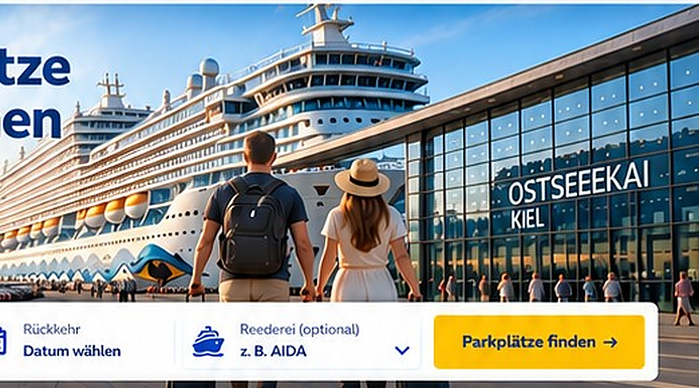
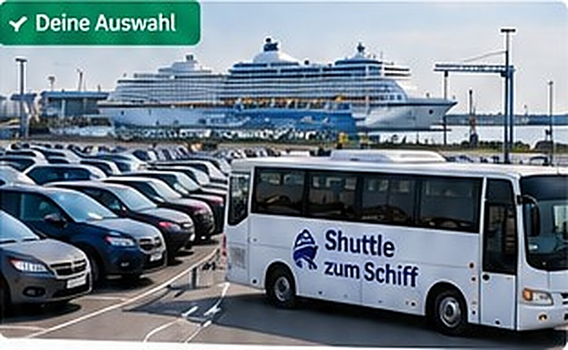
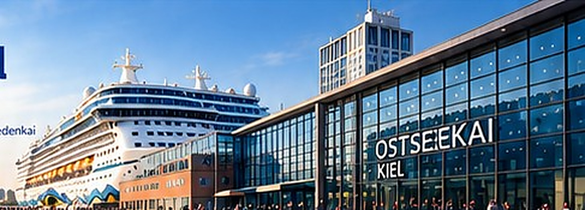

Vergleiche Preise, Entfernung und Service aller Parkplatzanbieter am Hafen – und buche in wenigen Minuten mit dem Extra Schutz der Allianz, ohne Zusatzkosten.

Parkplätze an den wichtigsten Häfen – schnell, einfach und zum besten Preis.
Sechs Gründe, die Kreuzfahrtgäste überzeugen.
Extra geschützt während der Parkdauer – ohne Zusatzkosten.
Ab 69 € für 7 Tage. Keine versteckten Kosten.
Vom Außenstellplatz bis zur Fahrzeugübergabe am Terminal.
Über 12.000 Kreuzfahrtgäste bewerten mit 4,8 von 5.
In wenigen Schritten zur sofortigen E-Mail-Bestätigung.
Kostenlos stornierbar bei vielen Angeboten.
Vom günstigen Außenstellplatz bis zum komfortablen Valet-Service.
Bei jeder Buchung ist dein Fahrzeug während der gesamten Parkdauer zusätzlich gegen typische Risiken abgesichert – ohne Zusatzkosten.
✔ Kratzer & Parkschäden
✔ Einbruch & Diebstahl
✔ Vandalismus & Brand

Terminals, Shuttle, Parkhaus und Valet – so parkst du bei uns.

Ostseekai Kiel Terminal-Parking
Terminal-Parking Shuttle-Service
Shuttle-Service Valet Parking
Valet Parking Parkhaus
Parkhaus| Anbieter | Art | Ort | Preis / 7 Tage |
|---|---|---|---|
| Port Parking Kiel | Shuttle | Ostseekai Kiel | 139 € |
| Kiel Shuttle Parking | Shuttle | Ostuferhafen | 89 € |
| Ostsee Parkhaus Kiel | Halle | Norwegenkai | 119 € |
| Kiel Valet Service | Valet | Ostseekai Kiel | 159 € |
| City Parking Kiel | Shuttle | Schwedenkai | 69 € |
„Einfache Buchung und alles hat perfekt geklappt. Der Shuttle war pünktlich und sehr freundlich.“
Sabine M.„Übersichtlich, faire Preise und eine große Auswahl. So beginnt der Urlaub entspannt.“
Thomas K.„Wir haben einen überdachten Stellplatz gebucht und waren rundum zufrieden.“
Julia R.Je früher, desto größer die Auswahl und desto günstiger die Preise.
Ja – bei qualifizierenden Buchungen ist der Allianz Parkplatzschutz inklusive.
Sofort per E-Mail mit Buchungsnummer und QR-Code.
Viele Angebote sind flexibel stornierbar – siehe Anbieterdetails.
Deine Buchung bleibt bestehen.
Ja, direkt am Ostseekai mit persönlicher Fahrzeugübergabe.
Als Affiliate verdienen oder als Parkplatzanbieter mehr Kunden gewinnen.
Kreuzfahrtparken in Kiel – das Wichtigste auf einen Blick.
Wer mit dem eigenen Auto zur Kreuzfahrt anreist, hat die Wahl zwischen Terminal-Parkplätzen, Shuttle-Parkplätzen, Parkhäusern und Valet-Service. Entscheidend sind Preis, Entfernung zum Terminal, Transferzeit, Öffnungszeiten und die Frage, ob dein Fahrzeug zusätzlich versichert ist. Auf KreuzfahrtParkplatz.de vergleichst du alle Angebote übersichtlich und buchst direkt online.
In der Saison sind günstige Plätze schnell vergeben.
Ostseekai, Norwegenkai, Ostuferhafen oder Schwedenkai – dein Ticket nennt es.
Etwa 30 Minuten vor Ankunft am Terminal eintreffen.
Allianz Parkplatzschutz ist bei qualifizierenden Buchungen inklusive.